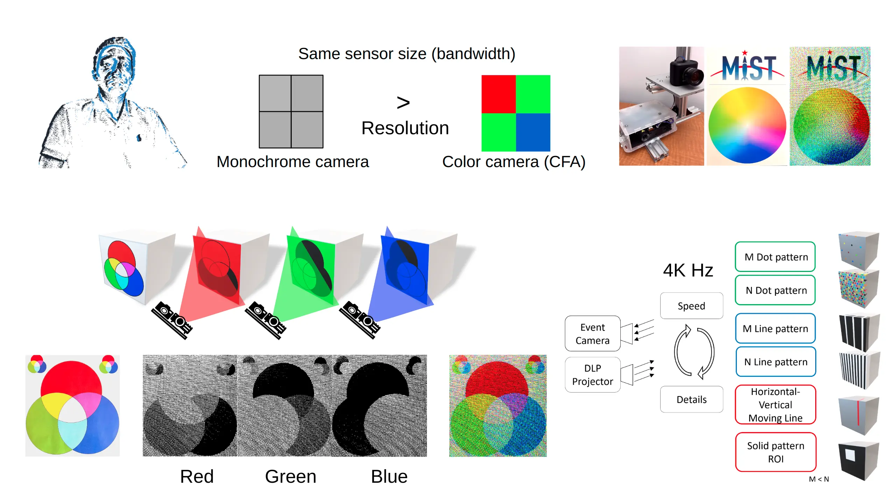
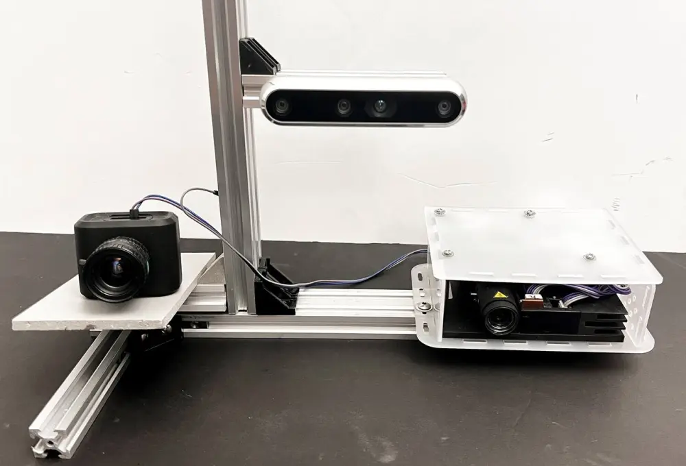
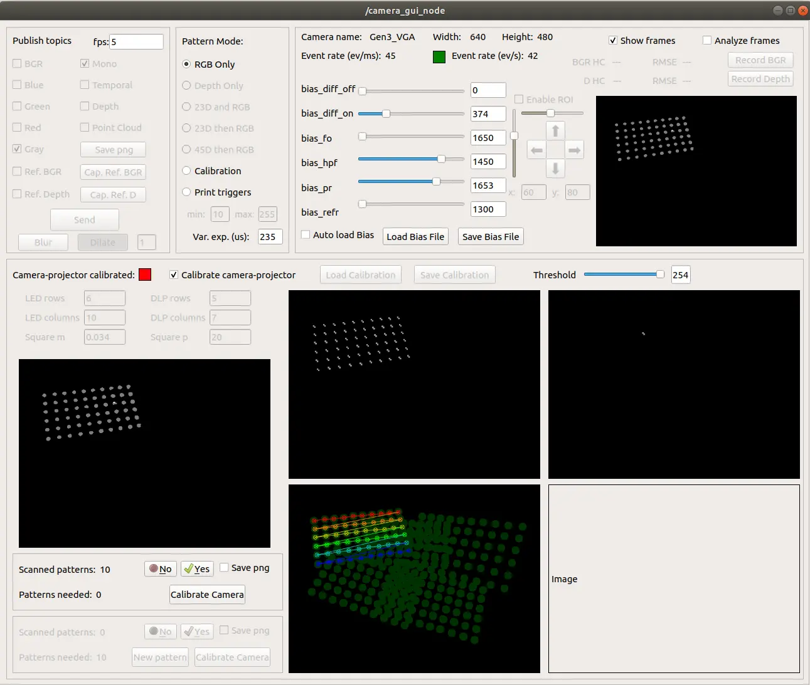

Event Based RGB D Perception
Real time pixel level color and depth sensing using an event camera and active structured light.
This project explored how controlled illumination could extend the capabilities of a monochrome event camera beyond conventional motion sensing. A TI LightCrafter 4500 projector was synchronized with the camera to introduce precisely timed color and structured light patterns into the scene.
The resulting event stream was processed to recover pixel level color and depth information from both stationary and moving objects. The completed platform combined sensor configuration, hardware triggering, calibration, data acquisition, and three dimensional reconstruction within a unified real time perception system.
My Contributions
My work covered the design and integration of the complete experimental system, from hardware communication and synchronization to software tools, calibration, and perception processing.
- Designed and integrated the event camera and projector sensing architecture.
- Developed C++ software for camera configuration, bias control, and event acquisition through the camera API.
- Integrated USB event streaming and hardware trigger synchronization between the event camera and projector.
- Controlled projection sequences for color and structured light acquisition.
- Developed ROS compatible tools for event publication, system configuration, and data processing.
- Developed a Qt graphical interface for camera setup, calibration, parameter adjustment, and visualization.
- Implemented color reconstruction, depth estimation, calibration, and point cloud generation.
- Designed and conducted experiments for performance evaluation and validation.
System Architecture
The system combined controlled illumination, asynchronous visual sensing, hardware synchronization, and real time processing within a unified perception pipeline.
Hardware Integration
The monochrome event camera and TI LightCrafter 4500 projector were connected through hardware triggers. The camera provided timing information used to coordinate projection sequences, while event data was transferred to the processing computer through USB.
Software Integration
C++ software managed camera parameters, event acquisition, synchronization, and projector operation. ROS provided the communication framework, while Qt tools supported system setup, calibration, visualization, and experimental control.
Perception Pipeline
Rapidly changing projection patterns generated controlled brightness events. These events were processed to recover color information, estimate depth, and reconstruct colorful three dimensional point clouds.
Results
The completed system demonstrated high speed color and depth sensing while retaining the temporal advantages of event based vision.
Publications, Code, and Research Communication
Event Based RGB Sensing with Structured Light
IEEE/CVF Winter Conference on Applications of Computer Vision, 2023
Ma thèse en 180 secondes, 2024
Polytechnique Montréal research communication profile presenting Event Based RGB D Perception With Structured Light for a general audience.
Event Based RGB D ROS Repository
Public source code and ROS tools developed for the event camera and structured light perception system.
Event Based Vision for Robot Soccer
Related work applying event cameras to fast object tracking, data collection, camera configuration, and ROS based visualization for robotic soccer.
Project Gallery
Selected images from the sensing platform, software tools, calibration process, and reconstructed outputs.

